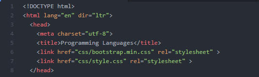

Programming Languages

What Is Programming Languages ?
A programming language is a formal language comprising a set of instructions that produce various kinds of output. Programming languages are used in computer programming to implement algorithms.
Most programming languages consist of
instructions for computers. There are
programmable machines that use a set
of specific instructions, rather than
general programming languages. Early
ones preceded the invention of the
digital computer, the first probably
being the automatic flute player
described in the 9th century by the
brothers Musa in Baghdad, during the
Islamic Golden Age.
Since the early
1800s, programs have been used to
direct the behavior of machines such as
Jacquard looms, music boxes and player
pianos.
The programs for these
machines (such as a player piano's
scrolls) did not produce different behavior in response to different inputs or conditions.
Definition of programming languages
A programming language is a notation for writing programs, which are specifications of a computation or algorithm. Some authors restrict the term "programming language" to those languages that can express all possible algorithms. Traits often considered important for what constitutes a programming language include:
Story "Hello World!"
A "Hello, World!" program generally is a computer program that outputs or displays the message "Hello, World!".
Such a program is very simple in most programming languages, and is often used to illustrate the basic syntax of a programming language.
It is often the first program written by people learning to code.
It can also be used as a sanity test to make sure that a computer language is correctly installed, and that the operator understands how to use it.
Examples for "Hello World"
Types of programming languages
| Programming Languages For Web | Programming Languages For Mobile Applications | programming languages for Desktop Applications |
|---|---|---|
| HTML | Java | C# |
| PHP | kotlin | C++ |
Source Code
i Used bootstrap library for style Page
Sources
- https://www.geeksforgeeks.org/
- https://howtodoinjava.com/
- https://www.javatpoint.com/
- https://www.w3schools.com/
- https://en.wikipedia.org/